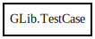

GLib.TestCase – glib-2.0 Reference Manual
Packages
glib-2.0
GLib
TestCase
TestCase
TestCase
Object Hierarchy:

Description:
[
Compact
]
[
CCode
( cname =
"GTestCase"
, ref_function =
""
, unref_function =
""
) ]
public
class
TestCase
Namespace:
GLib
Package:
glib-2.0
Content:
Creation methods:
public
TestCase
(
string
test_name,
TestFixtureFunc
data_setup,
TestFixtureFunc
data_func,
TestFixtureFunc
data_teardown,
size_t
data_size =
0
)